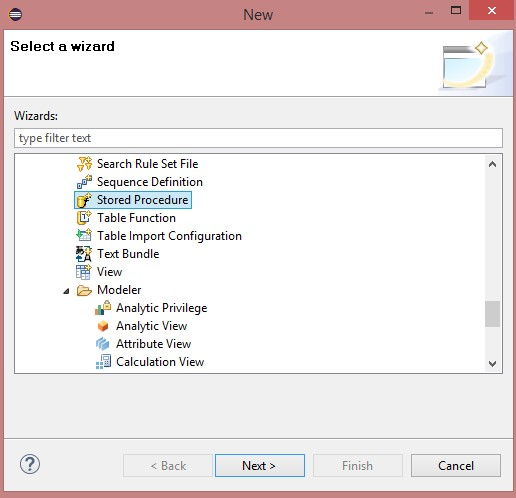
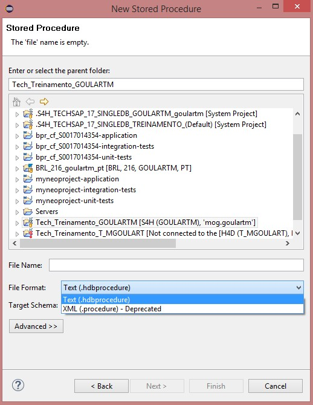
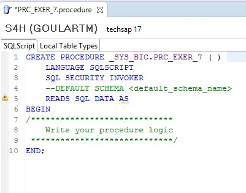
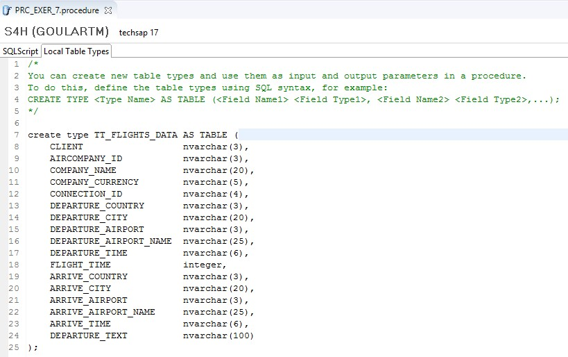
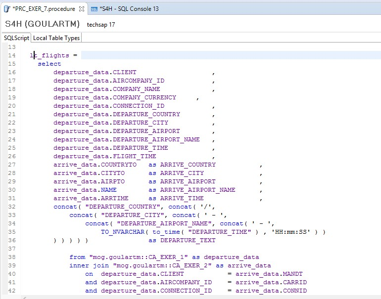

Exercício 7 - HANA
Contexto
Criar uma procedure que traga dados de conexões (SPFLI) com dados de partida e chegada dos voos. Mesma lógica do Exercício 3, porém fazendo todas as lógicas dentro da procedure (utilizar as views CA_EXER_1 e CA_EXER_2). A view deve retornar as seguintes informações:
| Campo | Tipo de Dados | Origem |
|---|---|---|
| CLIENT | nvarchar(3) | SPFLI-MANDT |
| AIRCOMPANY_ID | nvarchar(3) | SPFLI-CARRID |
| COMPANY_NAME | nvarchar(20) | SCARR-CARRNAME |
| COMPANY_CURRENCY | nvarchar(5) | SCARR-CURRCODE |
| CONNECTION_ID | nvarchar(4) | SPFLI-CONNID |
| DEPARTURE_COUNTRY | nvarchar(3) | SPFLI-COUNTRYFR |
| DEPARTURE_CITY | nvarchar(20) | SPFLI-CITYFROM |
| DEPARTURE_AIRPORT | nvarchar(3) | SPFLI-AIRPFROM |
| DEPARTURE_AIRPORT_NAME | nvarchar(25) | SAIRPORT-NAME |
| DEPARTURE_TIME | nvarchar(6) | SPFLI-DEPTIME |
| FLIGHT_TIME | integer | SPFLI-FLTIME |
| ARRIVE_COUNTRY | nvarchar(3) | SPFLI-COUNTRYTO |
| ARRIVE_CITY | nvarchar(20) | SPFLI-CITYTO |
| ARRIVE_AIRPORT | nvarchar(3) | SPFLI-AIRPTO |
| ARRIVE_AIRPORT_NAME | nvarchar(25) | SAIRPORT-NAME |
| ARRIVE_TIME | nvarchar(6) | SPFLI-ARRTIME |
| DEPARTURE_TEXT | nvarchar(100) | Calculated Column |
| Calculated Column | Valor | Tipo |
|---|---|---|
| DEPARTURE_TEXT | Concatenar campos DEPARTURE_COUNTRY + DEPARTURE_CITY + DEPARTURE_AIRPORT_NAME + DEPARTURE_TIME | NVARCHAR(100) |
Calculation View
Crie uma nova Stored Procedure:

Crie como uma procedure do tipo XML (.procedure), pois esse é o tipo de procedure que é suportado pelo ABAP. Caso a procedure não seja utilizada no ABAP, sempre crie como tipo Text (.hdbprocedure):



Crie o tipo de saída da procedure:
create type TT_FLIGHTS_DATA AS TABLE (
CLIENT nvarchar(3),
AIRCOMPANY_ID nvarchar(3),
COMPANY_NAME nvarchar(20),
COMPANY_CURRENCY nvarchar(5),
CONNECTION_ID nvarchar(4),
DEPARTURE_COUNTRY nvarchar(3),
DEPARTURE_CITY nvarchar(20),
DEPARTURE_AIRPORT nvarchar(3),
DEPARTURE_AIRPORT_NAME nvarchar(25),
DEPARTURE_TIME nvarchar(6),
FLIGHT_TIME integer,
ARRIVE_COUNTRY nvarchar(3),
ARRIVE_CITY nvarchar(20),
ARRIVE_AIRPORT nvarchar(3),
ARRIVE_AIRPORT_NAME nvarchar(25),
ARRIVE_TIME nvarchar(6),
DEPARTURE_TEXT nvarchar(100)
);

Informe os parâmetros de saída:

Faça a seleção dos dados utilizando as views do exercício 1 e 2:
lt_flights =
select
departure_data.CLIENT ,
departure_data.AIRCOMPANY_ID ,
departure_data.COMPANY_NAME ,
departure_data.COMPANY_CURRENCY ,
departure_data.CONNECTION_ID ,
departure_data.DEPARTURE_COUNTRY ,
departure_data.DEPARTURE_CITY ,
departure_data.DEPARTURE_AIRPORT ,
departure_data.DEPARTURE_AIRPORT_NAME ,
departure_data.DEPARTURE_TIME ,
departure_data.FLIGHT_TIME ,
arrive_data.COUNTRYTO as ARRIVE_COUNTRY ,
arrive_data.CITYTO as ARRIVE_CITY ,
arrive_data.AIRPTO as ARRIVE_AIRPORT ,
arrive_data.NAME as ARRIVE_AIRPORT_NAME ,
arrive_data.ARRTIME as ARRIVE_TIME ,
concat( "DEPARTURE_COUNTRY", concat( '/',
concat( "DEPARTURE_CITY", concat( ' - ',
concat( "DEPARTURE_AIRPORT_NAME", concat( ' - ',
TO_NVARCHAR( to_time( "DEPARTURE_TIME" ) , 'HH:mm:SS' ) )
) ) ) ) ) as DEPARTURE_TEXT
from "mog.goulartm::CA_EXER_1" as departure_data
inner join "mog.goulartm::CA_EXER_2" as arrive_data
on departure_data.CLIENT = arrive_data.MANDT
and departure_data.AIRCOMPANY_ID = arrive_data.CARRID
and departure_data.CONNECTION_ID = arrive_data.CONNID
;

Preencha a estrutura de saída:
et_flights =
select * from :lt_flights
where CLIENT = :iv_mandt ;

Salve, ative e teste a procedure.